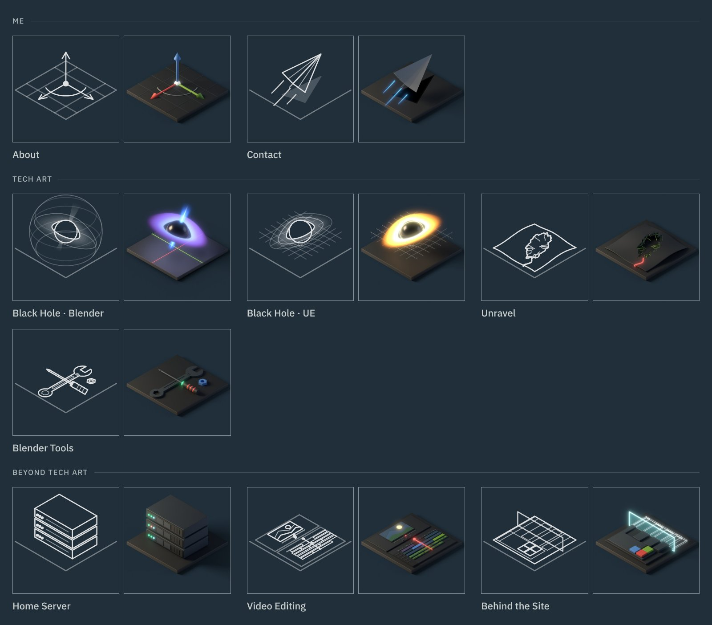

How this site is made. Every tile is a small 3D scene built by a script, shown as line art until you hover over it, when it turns into the render.
The site itself is plain HTML, CSS and a little JavaScript, with no framework and no build step. This page covers the look, the layout, how the project list works, the pipeline behind the tiles, and how the line art moves.

The look
- Quiet on purpose
- The work should be the loudest thing on the page, so the site stays out of the way: one font, one background colour, one accent, and motion only where it explains something: the line art drawing in and out, the phone menu, and one small secret in the footer.
- The frame
- The page is one grid with 1px gaps, and the frame lines are simply the colour showing through those gaps. Every box lines up without drawing a single border by hand.
- Colour
- A slate background, #212f3a, with soft off-white text and a single teal accent for links and the current page. Every colour lives as a variable at the top of one stylesheet, so a change happens in one place.
- Light and dark
- The switch in the header flips between a dark and a light theme. The light theme is a second set of the same colour variables: a soft off-white instead of stark white, deep slate text, and a darker teal, because the dark theme's teal is too pale to read on a light page. Each colour was checked so text reads as easily in one theme as in the other. The site opens in whatever the visitor's device is set to, dark if it doesn't say, and remembers a choice made with the switch on every page after it. A tiny script at the top of each page applies the theme before anything is drawn, so a page never flashes the wrong colours.
- Type
- IBM Plex Sans in four weights, hosted with the site so nothing loads from elsewhere. Long text sits in a column that never gets wider than 1200 pixels, so lines stay easy to read on large screens.
- Tiles as one family
- Every tile shares the same camera, lighting and plate, and follows the same palette rules, so new projects always look like they belong. The plate lands on exactly the same pixels in every tile, and only the object standing on it changes.
Layout and scrolling
- A fixed frame
- On larger screens the frame fills the window and stays put. The header, the tile rail and the footer are always in view, and only the page content scrolls.
- The rail scrolls on its own
- When there are more tiles than fit, the rail gets its own scroll, held inside the rail so it never drags the page along with it.
- Keyboard first
- With only the content scrolling, the arrow keys, Page Down and Space need somewhere to go. The content area is focused quietly on load, so they work straight away.
- Phones
- A fixed frame would leave a sliver of a phone screen for reading, and stacking the tiles above the content meant a long scroll before reaching it. So on phones the page is just the header, the title and the content, and the tiles move into a menu behind a Projects button at the top left. The header stays pinned while reading, so the menu is always one tap away.
- Tiles like live tiles
- The menu borrows from Windows Phone: big lowercase group names, two columns of square tiles, and a few twice as wide. Pinned projects go wide, and so does the last tile of a group that would otherwise sit alone in its row, so every group closes as a full block. When the menu opens, the tiles turn in one after another as renders, then each one flips over and draws its line art in as it turns, so the flip and the drawing read as one movement. The current page's tile keeps its render and stays still, which marks where you are the same way the rest of the site does: renders for what you're looking at, line art for everything else.
- Short windows
- Desktop windows too short for the fixed frame fall back to a normal scrolling page, with the rail kept in place.
- Sizes that breathe
- The rail's width, the side spacing and the tile gaps grow with the window between set limits, so the layout holds from a laptop to a wide monitor without breakpoints for each size.
Projects from one list
- One file
- Every project is one entry in a single list. The tile rail and the list of work on the About page are both built from it, so adding a project is one edit.
- Groups
- The rail opens with a Me group, About and Contact, then the projects in two groups: tech art, and work beyond it. The same group names head the rail, the work list and the phone menu.
- Sorted by itself
- Inside a group, pinned projects come first, then bigger projects, then newer ones, so a new one lands in the right place without moving anything.
- Drafts stay private
- Each project is live, draft or planned. Visitors only see live ones. Opened on my own computer, the site also shows drafts and planned projects, so I can preview pages before they're published.
- A way to get in touch
- Every page except Contact ends with a short "Like my work? Get in touch" line, added by the same script, so no page needs it written in by hand.
Tile pipeline
One render makes everything a tile needs.
- One template
- Every tile has its own build script, but they share the same studio, camera, compositor, saving and line art code. Only the part that builds the scene changes, which is what keeps the tiles consistent.
- The same camera
- An orthographic camera at the true isometric angle, 35.264° down and 45° around, with a warm key light and a cool fill. Every object sits in the same space and catches the same light.
- Shared framing
- The first tiles were framed one by one, by eye, and side by side some plates sat a little lower or smaller than others. Now the camera's aim and zoom live in one shared block at the top of every script, and each tile fits its object to the frame instead of the other way round: the paper plane flies a little lower, the server stack is scaled down evenly, and the editing tile became an editor's viewer and timeline laid out on the plate.
- Palette rules
- Objects are near-black. The accents are Blender's red, green and blue axis colours, and each tile gets its own glow colour, so no two tiles light up the same way.
- Rendered clear
- Each tile renders with a transparent background and a shadow catcher. The compositor then lays that one render onto each theme's exact background colour, so the shadows sit on the page in both themes, there's no visible edge around the image, and a single F12 makes the dark and the light tile together.
- Bloom only where it glows
- The glow comes from the emission pass alone, capped so very bright parts don't take over. Three blurs, tight, medium and wide, are added on top, and their size scales with the resolution, so all three image sizes glow the same.
- Line art from the geometry
- The line art isn't edge detection on the image. Each tile lists what to draw by object name: outlines, edges, dots. Those real 3D points are projected through the render camera and written as a clean SVG, saved twice: white lines for the dark theme and dark lines for the light one. That's why the lines are crisp and never noisy.
- The grid on this page
- The image of every tile at the top of this page is made by a small page that reads the same project list, so it always shows the tiles in the same groups and order as the rail.
- Saved on F12
- The line art hooks into rendering, so every F12 saves it next to the images. It always matches the camera and the objects as they are at that moment, and moving something can never leave the two out of step.
- More than lines
- Each line art entry has a kind: an outline, an open line, a dot, a filled shape, or a soft fog ring. Fills carry the paper plane's shadow on Contact, and the black hole tile layers fog rings for its disk and drops the grid lines that pass behind the hole, so the drawing reads the same way the render does.
- Lensing on a tile
- Real lensing would need a custom renderer, so the black hole tile fakes it in the geometry. The far half of the disk folds up behind the hole and is pulled in toward it, the shape lensing gives the real thing. Because it's geometry rather than a post effect, the line art follows it for free.
- On the page
- Each tile stacks its line art and its render. The current page's tile gets a thicker border instead of staying lit. On touch screens, which can't hover, the current tile keeps its render. After clicking a tile, it stays lit on the new page until the cursor moves, because browsers don't know what's under a still cursor until then.
Line art in motion
Because the line art is real SVG lines rather than a picture, the browser can draw each line along its length. Everything that moves on the tiles is built on that one idea.
- Drawing in on arrival
- When the site opens, every tile traces itself in, one after another, top to bottom. It happens once per visit, so moving between pages stays calm, and a reload counts as a fresh visit and plays it again. It shows from the first second that the tiles are drawn from 3D scenes, not icons.
- Hovering
- As the cursor arrives, the lines pull back off the tile while the render fades in underneath. When it leaves, the lines draw themselves back over the render as it fades out. The same lines that drew the tile also undo it, so the whole site speaks one visual language. In the light theme, dark lines would vanish against the render, so they turn white while it shows and ease back to their own colour as it fades, on exactly the same timing.
- What I tried first
- The first leave effect was a scan line wiping the render away. It looked good on its own, but it was louder than the work it framed, so it went. A plain crossfade was too flat, and the line draw sat in between: noticeable, quick, and about the tile itself.
- Timing
- Each line starts a little after the one before it, so a tile draws as a sweep rather than all at once. Drawing in eases out and pulling back eases in, which makes both feel like one motion played forward and back. The hover version is faster than the arrival, so it never feels like waiting.
- No stray dots
- Lines have round ends, and a round end on a line of zero length still paints a dot. Every line is pushed a few pixels past its own end before it starts, so an undrawn tile is truly empty.
- A bubble that grows
- One tile breaks the rule on purpose. The Black Hole · Blender tile's lens sphere doesn't trace along its length, because a sphere drawn that way reads as flat circles. Instead it grows out of the black hole like an air bubble: it swells from the hole's centre while its outline sweeps round, its rings follow, and two pole-to-pole lines spin once and fade. The tile script saves the sphere's size and the camera's projection into the SVG, so the browser works out every frame in 3D, including the part sunk into the plate. Hovering plays it backwards and the bubble shrinks into the hole. The sphere only lives in the line art, like the scene setup you see in Blender's viewport, while the render shows just the finished black hole.
- A small black hole
- The dot in the footer is a tiny black hole: black, with a teal rim and glow. Click it and it swells and trembles, smoke starts swirling in, and the letters on both sides fall into it, nearest first, each curling round the rim as it vanishes. The hole grows fatter with every letter and throbs once it's full. Then it caves in on itself to a tiny point, holds for a beat, and bursts: the rim flashes, two rings of light ripple out, the smoke is blown away, and the letters are thrown back out in the order it took them, lobbed in small arcs, tumbling, landing in place.
- Finding the moment
- The first versions pulled the letters into orbit and let them go again. They moved well but felt unfinished, because nothing actually happened at the hole. I tried whole words orbiting, a spinning disk of text with Doppler colour, and letters pulled in as threads. Swallowing won because it has a beginning, a middle and an end: the hole takes the footer, holds it, and gives it back. Shrinking to a point just before the burst works like a wind-up before a throw, so the release lands harder without needing anything louder. Lightning and a hard shake made it look busy, so they went, leaving a gentle tremble and the smoke.
- Why it's scripted
- The tiles' motion is all CSS transitions, which suit movement from one state to another. Here every letter's path, size and timing changes each frame, and the smoke is a small particle system, so the footer works it out frame by frame in JavaScript and draws the smoke and the ring on two small canvases. Timing comes from the clock rather than the frame count, so it plays at the same speed on any screen. Each letter is lifted out of the text into its own element so it can move alone, and the original line stays readable to screen readers.
- Fallbacks
- Drawing needs the SVG inside the page, so the script fetches each file and swaps it in. Opened straight from disk the browser refuses, and the tiles simply stay still. Anyone who has asked their system for reduced motion gets still tiles, no menu animation, and a black hole that only glows.
Credit
The look, the layout and every tile were designed and directed by me. The site's code and the scripted Blender pipeline behind the tiles were built with AI-assisted scripting, and every tile was rendered and adjusted by hand.